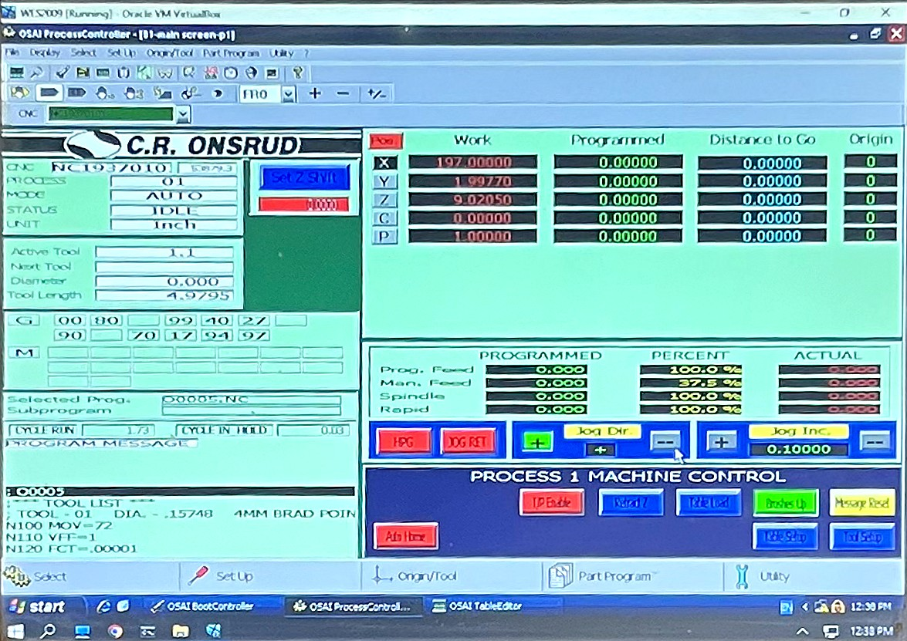
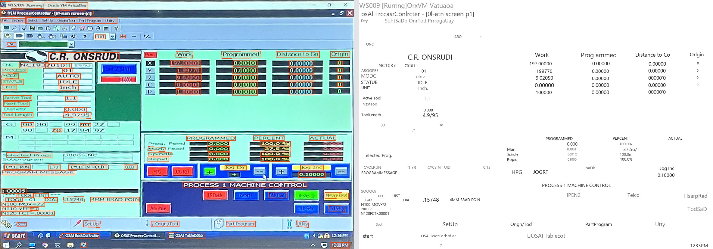

Problem Statement
A modern CNC will tell you what it is doing. It publishes to an API, speaks a protocol like MTConnect or OPC UA, and a monitoring system can simply subscribe. A great deal of the machinery actually running in factories does none of that. It was installed before anyone expected a machine to be networked, its controller has no outward interface at all, and there is no endpoint to connect to — the data exists, but it exists only on the screen in front of the operator.
These are usually the machines you least want to be blind about. They are old, they are heavily used, and they are exactly the ones whose downtime nobody can account for at the end of a shift. Replacing them to gain visibility is absurd; retrofitting the controller is invasive, vendor-specific, and often impossible.
At Conduit I took the other route. If the machine will not publish its state, read the screen it already shows.
Approach
A camera is mounted above the operator panel, looking down at the HMI. That mounting position is a compromise: it has to see the screen without blocking the operator or catching the overhead lights, so the camera ends up off-axis and the screen arrives in the frame as a trapezoid rather than a rectangle. Everything downstream has to cope with that.
The pipeline is deliberately simple and ordered so that each stage makes the next one easier: find the screen, flatten it, read it, parse it, ship it.
From Panel to Server
Why Perspective Correction Comes First
OCR assumes text sits on horizontal lines. Photographed off-axis, an HMI gives it neither: rows slope, characters shear, and the glyphs at the far edge of the screen are compressed into fewer pixels than the ones nearby. Recognition accuracy falls off exactly where the screen is most distorted.
So the screen region is located, its four corners are found, and the quad is warped back to a rectangle before a single character is read. The difference is visible — this is the same panel, first as the camera sees it and then flattened:

After flattening, the title bar, the field labels and the coordinate table all sit on straight horizontal lines, and every part of the screen is at a comparable scale. That is the input OCR was designed for.
Reading the Panel
With a flattened screen, text detection and recognition run over the whole panel and the results are parsed into fields: machine status, active program, tool number, feed and spindle percentages, coordinates, alarm text. What leaves the device is those values — small structured messages published over MQTT — not video, which keeps bandwidth negligible and the imagery inside the plant.

The illustration above is a run with stock PP-OCR models, and it shows why the production
system does not use them unmodified. The large, high-contrast content comes through cleanly — the
coordinate table, the feed and spindle percentages, the headline labels. The small status text does
not: MODE is read as MODC, STATUS as STATUE,
CYCLE RUN as CYOLRUN. Those are precisely the fields that say why a machine
is stopped, which is why PaddleOCR was fine-tuned on HMI screens rather than used off the shelf.
What the System Delivers
- Telemetry from machines with no interface. No controller retrofit, no vendor API, no rewiring — a camera and an edge device beside the machine.
- Robust to how the camera has to be mounted. Perspective correction means the camera can go where it fits on the panel rather than where OCR would prefer it.
- Structured fields, not screenshots. The panel is parsed into named values, so the data is usable for utilization and downtime attribution instead of being an image someone has to look at.
- Small, local, real-time. Inference runs on a Jetson Orin Nano at the machine and only parsed values travel, published over MQTT into the systems the plant already runs.
- Old machines join the same dashboard as new ones. Once the panel is readable, a 1990s controller reports the same fields as a networked machine.
This sits inside the wider monitoring work at Conduit, where camera-based machine-state classification provides the other half of the picture: Manufacturing Process Monitoring →